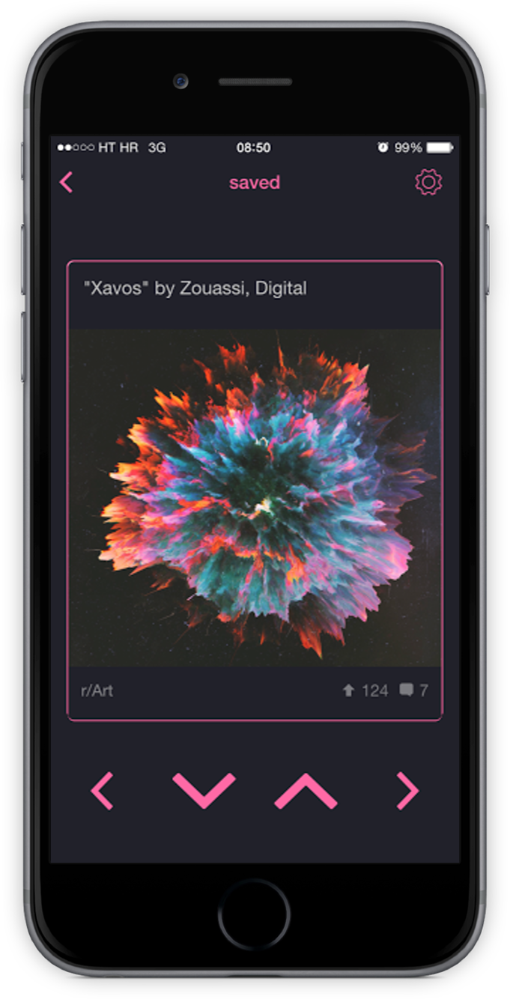
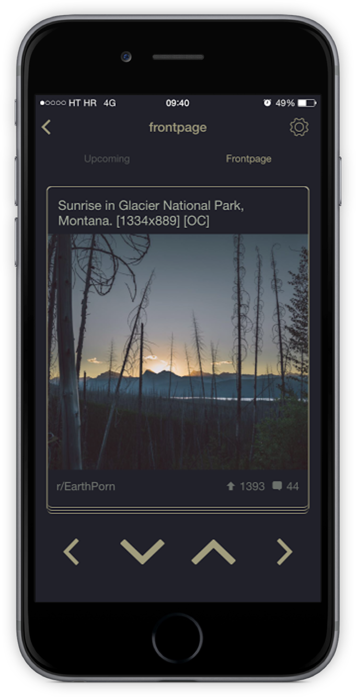

Updraft for Reddit
I'd like to introduce you to a project I've been working on for the past year: Updraft for Reddit
It started as an experiment to reimagine how Reddit would look if it used Tinder-like cards for posts and swiping for upvoting/downvoting. From there it grew while I constantly tinkered with it and added new features. I wanted every part of the experience to be different, completely simple and easy to use. The design reflects that, using just two colors and hiding all the complexity at first glance.
 The feedback is overwhelmingly positive and, surprisingly, quite a few people have written to say that Updraft is their new main Reddit app. I'm listening to all constructive criticism and advice and I'm hard at work on new updates that will make Updraft even better than before.
It's available for download in the App Store: Updraft for Reddit